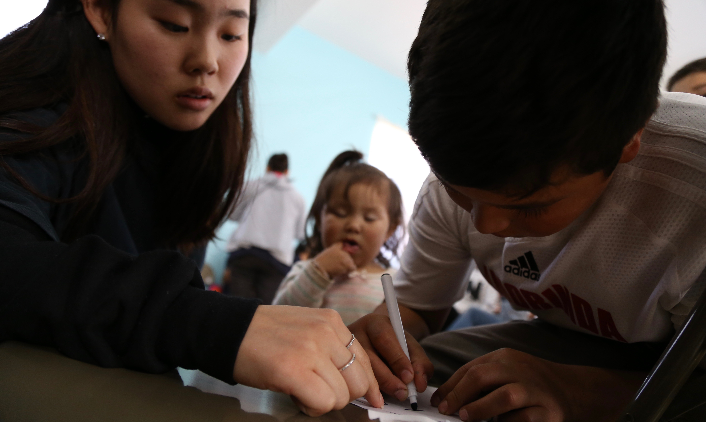
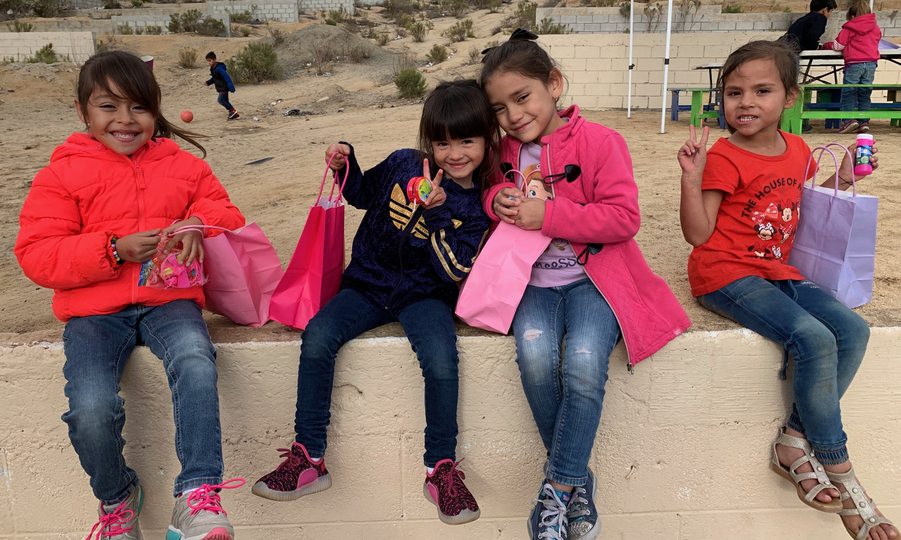
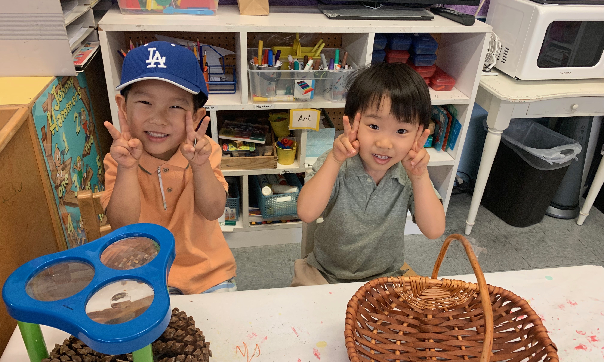
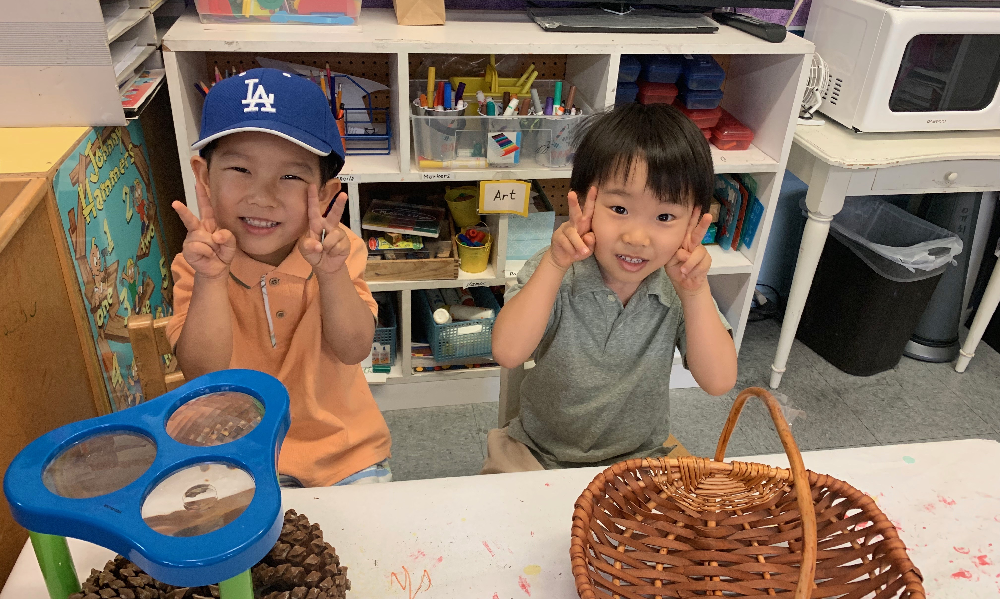
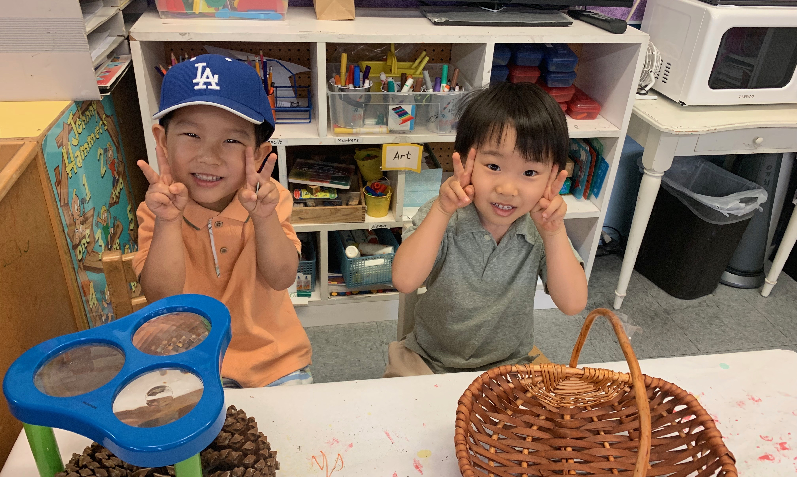

Ashley Lee
Born and raised in La Crescenta, CA, I was raised to help others and see the bigger picture of problems. Being the oldest child in the family, I was taught to not only be a good example to my younger sister, but to be a helping hand. Growing up, I have met numerous individuals with disorders and illnesses to bring company and bring support to them. Having faced many difficult situations assisting others with both personal and simple dilemmas, I have developed a strong mentality and I now aspired to find a career where I can help others. I have worked with children in preschools, daycare centers, and nonprofit organizations with disabled kids. I have taught kids from ages 3 to 13 and built my patience and love for children. For the past 6 years, I have been in settings with children who have speech delay, autism, and behavioral disorders. As I further explored the world and traveled to many countries observing kids, I found a passion to become a child life specialist.
I have traveled to Mexico three times, Korea twice, Mongolia, and other local states and built relationships with the impoverished and struggling families. I am supporting the communities there by bringing gifts to the kids and the young single moms there. I also visited many senior homes and hospitals to bring positivity to the patients there. I have a strong desire to create a new perspective for those who may be experiencing negative thoughts because of their struggles and situations.
As a child life specialist, I specifically plan on closely working with children and their families. With a background in psychology and health, my purpose is to support families by serving as emotional support and helping develop coping strategies. I also focus on decreasing stress and anxiety experienced in the hospital setting for kids. To do that, we help them understand what is happening in a way that is appropriate for the child’s age and level and understanding. Additionally, we ensure that children are on track developmentally during their stay in the hospital. Utilizing many strategies with doll, art, or music, we try to create positive interactions and friendly environments for the children.
Experience
Teacher
• Taught children basic english, math, and science
• Oversaw snack times
• Experience with children with behavioral and speech disabilities
Cashier
• First and second grade teacher
• Assisted students with homework and created workbooks
Festival Co-coordinator
• Filed important papers
• Communicated with busniesses in Glendale, California
• Organized activities and booths for the festival
• Communicated with Board of Education members
Education
UC Riverside
Portfolio


 

